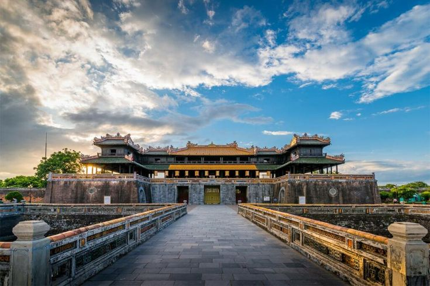
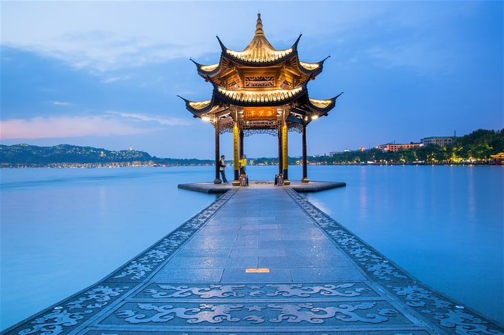
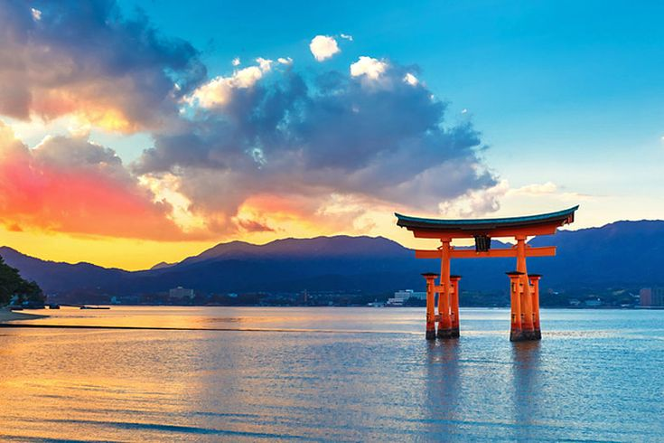

Keleti Kaland
Utazási Iroda
Szervezett utaink:
Fedezd fel Vietnám varázslatos városait velünk!
Hanoi: A kaland a nyüzsgő fővárosban kezdődik, ahol a tradicionális utcák és a modern városi élet találkozik. Fedezd fel a Hoan Kiem-tavat és a híres Óvárost!
 Ha Long: Utazás a lenyűgöző Ha Long-öbölbe, ahol hajókirándulás során csodálhatod meg a mészkőszigeteket és a kristálytiszta vizet.
Ha Long: Utazás a lenyűgöző Ha Long-öbölbe, ahol hajókirándulás során csodálhatod meg a mészkőszigeteket és a kristálytiszta vizet.Ho Si Minh-város: Éld át Vietnám legnyüzsgőbb városának pezsgő életét! Fedezd fel a Reunifikációs Palotát, a Notre Dame-katedrálist és a város modern ázsiai arcát.
Sa Pa: A hegyvidéki régió következik, ahol a teraszos rizsföldek és a helyi törzsek kultúrája kínál egyedi élményt.
 Hoi An: Sétálj az óváros romantikus utcáin, ahol a lampionok fénye és a helyi piacok különleges hangulata vár rád.
Hoi An: Sétálj az óváros romantikus utcáin, ahol a lampionok fénye és a helyi piacok különleges hangulata vár rád.Hue: A császári városban a Nguyen-dinasztia történelmét és a Perfume-folyó menti látványosságokat fedezheted fel.
Da Nang: Látogass el az ikonikus Arany Hídhoz, és élvezd a város modern atmoszféráját.
Zárd az utazást a tengerparton, ahol a kristálytiszta víz és a fehér homokos strandok tökéletes kikapcsolódást nyújtanak.
Csatlakozz hozzánk, és éld át Vietnám szépségeit és változatosságát egy emlékezetes utazás során!
Fedezd fel Kína kulturális és természeti csodáit velünk!
Az utazás a fővárosban kezdődik, ahol a Tiltott Város és a Tiananmen tér a kínai történelem grandiózus emlékei. Sétálj a Kínai Nagy Fal ikonikus szakaszán!
Xi'an: Fedezd fel a híres agyaghadsereget, amely a világ egyik legfontosabb régészeti lelete, és merülj el a Selyemút történelmi hangulatában.
Sanghaj: A modern metropolisz futurisztikus felhőkarcolóival és a Bund gyarmati stílusú épületeivel a tradíció és az innováció tökéletes keveréke.
Hangzhou: Barangolj a Nyugati-tó partján, amely Kína egyik legromantikusabb természeti helyszíne, és élvezd a híres zöld teát.
Guilin: Látogass el a lenyűgöző mészkőhegyeiről híres régióba, ahol a Li-folyó menti hajókirándulás felejthetetlen élményt nyújt.
Chengdu: Ismerd meg a pandák hazáját, és fedezd fel a szecsuáni konyha fűszeres ízeit!
Hongkong: A körutazást a vibráló Hongkongban zárjuk, ahol a modern városi élet és a tengerparti látványosságok varázsolják különlegessé az utolsó napokat.
Kína minden állomása egy újabb fejezetet mesél el a világról. Foglalj most, és tapasztald meg személyesen ennek az ősi és mégis modern országnak a szépségeit!
Fedezd fel Japán lenyűgöző világát velünk!
Tokió: Kezdd a kalandot a világ egyik legizgalmasabb metropoliszában, ahol a modern felhőkarcolók és a tradicionális szentélyek tökéletes harmóniában léteznek. Fedezd fel a Shibuya kereszteződést és a csodás Meiji-szentélyt!
 Kiotó: Barangolj az ősi császári fővárosban, ahol a tradicionális teaházak, zenkertek és a híres Arany Pavilon elbűvölő látványt nyújtanak.
Kiotó: Barangolj az ősi császári fővárosban, ahol a tradicionális teaházak, zenkertek és a híres Arany Pavilon elbűvölő látványt nyújtanak.Osaka: Tapasztald meg a város pezsgő éjszakai életét és gasztronómiai különlegességeit, például a takoyakit és az okonomiyakit. Ne hagyd ki az Oszakai várat sem!
Nara: Látogass el Japán első fővárosába, ahol szabadon sétáló szarvasok és a lenyűgöző Todai-ji templom vár rád.
Hiroshima: Merülj el a béke városának történelmében, és fedezd fel a Miyajima-sziget híres „úszó” torii kapuját.
Fudzsi-hegy: Gyönyörködj Japán ikonikus szimbólumában, a Fudzsi-hegyben, amely a természet szerelmeseinek paradicsoma.
Hokkaidó: Élvezd a lenyűgöző tájakat, a havas hegycsúcsokat és a termálforrásokat Japán északi szigetén.
Foglalj most, és tapasztald meg Japán egyedülálló szépségeit, ahol a múlt és a jövő találkozik!